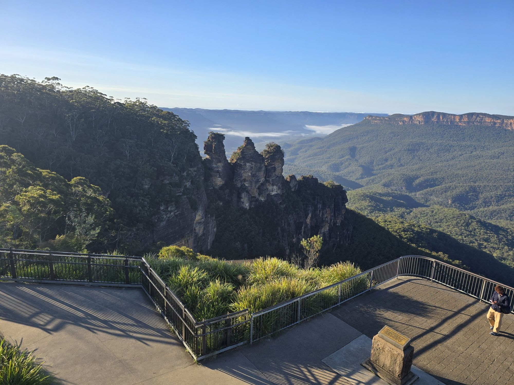
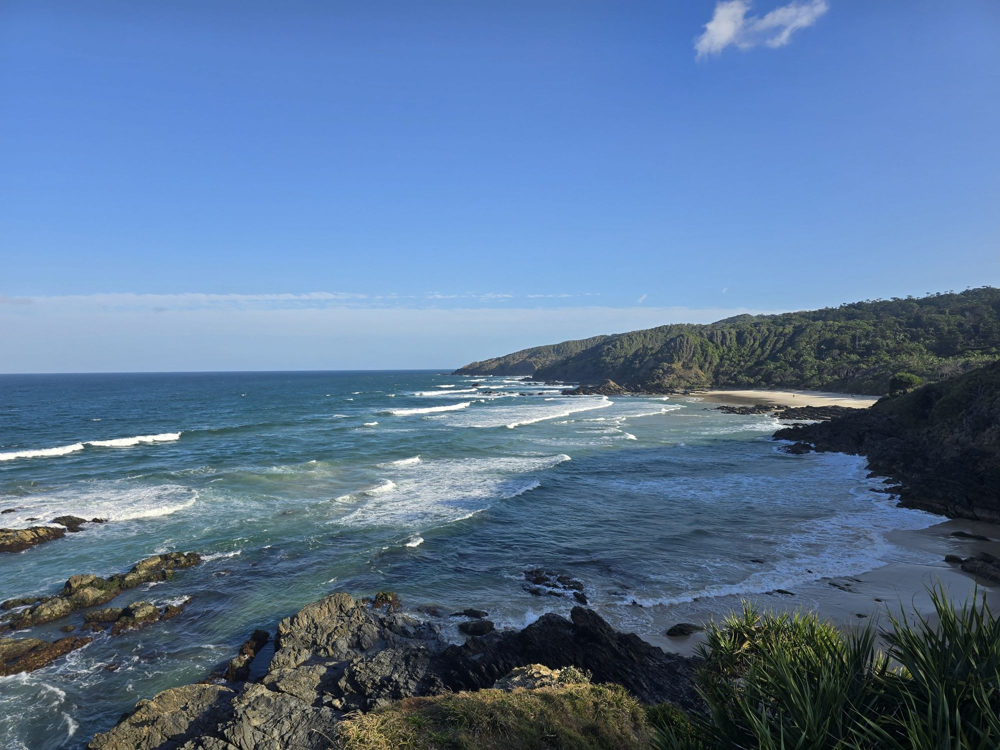
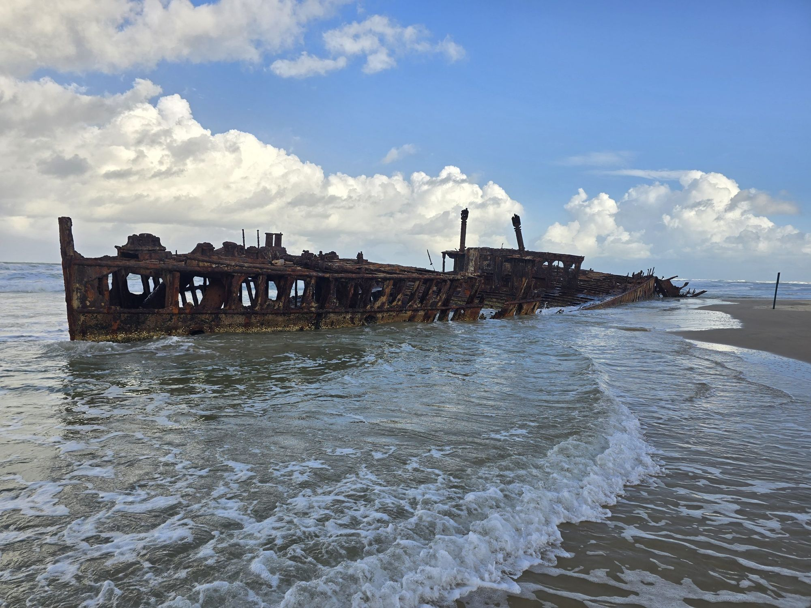
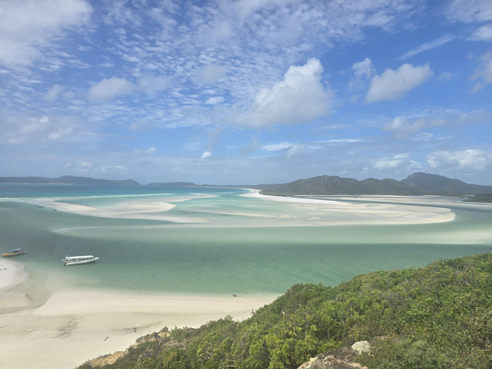
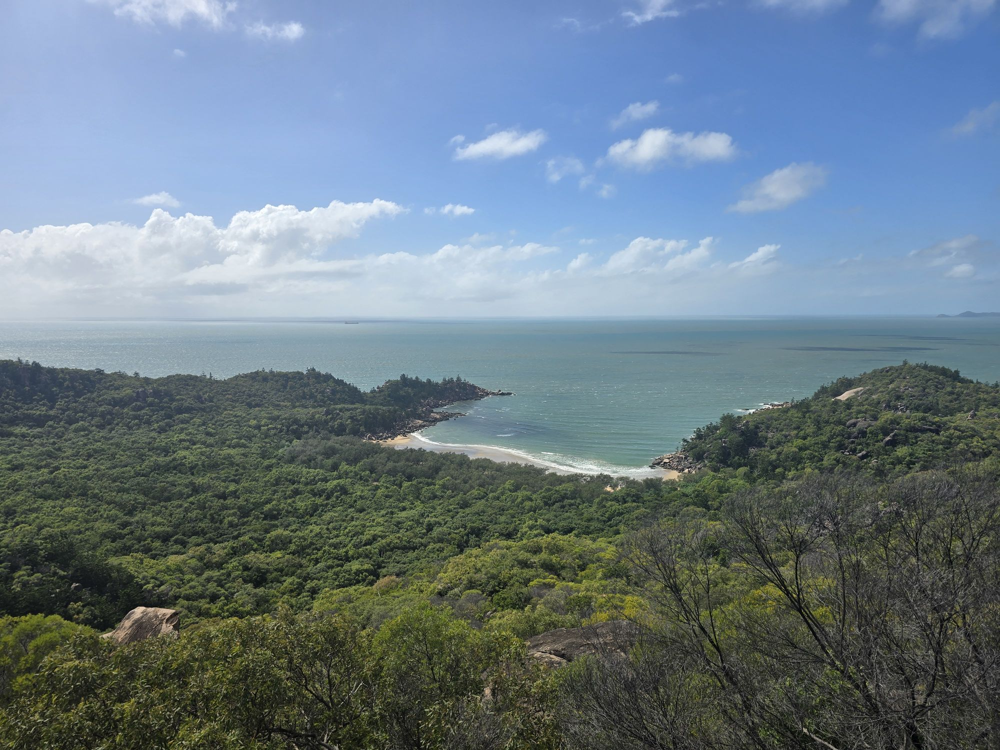

I planned a long trip down Australia's east coast and around Tasmania with AI, then followed the plan almost exactly. Most changes were because of the weather. This site turns it into a guide you can use: what I did, what it really cost, what I'd skip, and what I swapped in when the weather turned.
- Real costs
- Straight verdicts
- Weather plan B
- Hotels, flights and hire cars
The regions
Six regions, in the order I did them. Each one works on its own. Got 10 days? Take one block. Got longer? Link several together.

Sydney and the Blue Mountains
Day trips from Sydney, the Blue Mountains, Bondi to Coogee and the harbour.

Tasmania
A 12-day loop by car. Beautiful: a bit like the English countryside, with similar weather.

Gold Coast and Byron Bay
Diving Julian Rocks, kayaking with dolphins and the Byron hinterland.

Sunshine Coast, Noosa and K'gari
A 3-day 4WD tour of K'gari, Noosa's national park and the Everglades.

The Whitsundays
A liveaboard, a fast boat to Whitehaven Beach and Airlie Beach.

Magnetic Island to Cairns and Port Douglas
Rafting, reef dives, Green Island and the Daintree, without a car.
This is the east coast and Tasmania only. It doesn't cover Perth, Adelaide, Uluru, Darwin or the Red Centre.
About the trip
This guide is for people who'd rather see as much as possible in the time they have, without roughing it: hotels, flights and hire cars, not hostels and backpacking.
Everything here comes from one real trip. I show the costs I actually paid. Where some of my stays were free (with family), I show what you'd pay instead, so the numbers are useful to you.